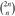

|
|
< Day Day Up > |
|
Radix sort is the algorithm used by the card-sorting machines you now find only in computer museums. The cards are organized into 80 columns, and in each column a hole can be punched in one of 12 places. The sorter can be mechanically "programmed" to examine a given column of each card in a deck and distribute the card into one of 12 bins depending on which place has been punched. An operator can then gather the cards bin by bin, so that cards with the first place punched are on top of cards with the second place punched, and so on.
For decimal digits, only 10 places are used in each column. (The other two places are used for encoding nonnumeric characters.) A d-digit number would then occupy a field of d columns. Since the card sorter can look at only one column at a time, the problem of sorting n cards on a d-digit number requires a sorting algorithm.
Intuitively, one might want to sort numbers on their most significant digit, sort each of the resulting bins recursively, and then combine the decks in order. Unfortunately, since the cards in 9 of the 10 bins must be put aside to sort each of the bins, this procedure generates many intermediate piles of cards that must be kept track of. (See Exercise 8.3-5.)
Radix sort solves the problem of card sorting counterintuitively by sorting on the least significant digit first. The cards are then combined into a single deck, with the cards in the 0 bin preceding the cards in the 1 bin preceding the cards in the 2 bin, and so on. Then the entire deck is sorted again on the second-least significant digit and recombined in a like manner. The process continues until the cards have been sorted on all d digits. Remarkably, at that point the cards are fully sorted on the d-digit number. Thus, only d passes through the deck are required to sort. Figure 8.3 shows how radix sort operates on a "deck" of seven 3-digit numbers.
It is essential that the digit sorts in this algorithm be stable. The sort performed by a card sorter is stable, but the operator has to be wary about not changing the order of the cards as they come out of a bin, even though all the cards in a bin have the same digit in the chosen column.
In a typical computer, which is a sequential random-access machine, radix sort is sometimes used to sort records of information that are keyed by multiple fields. For example, we might wish to sort dates by three keys: year, month, and day. We could run a sorting algorithm with a comparison function that, given two dates, compares years, and if there is a tie, compares months, and if another tie occurs, compares days. Alternatively, we could sort the information three times with a stable sort: first on day, next on month, and finally on year.
The code for radix sort is straightforward. The following procedure assumes that each element in the n-element array A has d digits, where digit 1 is the lowest-order digit and digit d is the highest-order digit.
RADIX-SORT(A, d)
1 for i ← 1 to d
2 do use a stable sort to sort array A on digit i
Given n d-digit numbers in which each digit can take on up to k possible values, RADIX-SORT correctly sorts these numbers in Θ(d(n + k)) time.
Proof The correctness of radix sort follows by induction on the column being sorted (see Exercise 8.3-3). The analysis of the running time depends on the stable sort used as the intermediate sorting algorithm. When each digit is in the range 0 to k-1 (so that it can take on k possible values), and k is not too large, counting sort is the obvious choice. Each pass over n d-digit numbers then takes time Θ(n + k). There are d passes, so the total time for radix sort is Θ(d(n + k)).
When d is constant and k = O(n), radix sort runs in linear time. More generally, we have some flexibility in how to break each key into digits.
Given n b-bit numbers and any positive integer r ≤ b, RADIX-SORT correctly sorts these numbers in Θ((b/r)(n + 2r)) time.
Proof For a value r ≤ b, we view each key as having d = ⌈b/r⌉ digits of r bits each. Each digit is an integer in the range 0 to 2r - 1, so that we can use counting sort with k = 2r - 1. (For example, we can view a 32-bit word as having 4 8-bit digits, so that b = 32, r = 8, k = 2r - 1 = 255, and d = b/r = 4.) Each pass of counting sort takes time Θ(n + k) = Θ(n + 2r) and there are d passes, for a total running time of Θ(d(n + 2r )) = Θ((b/r)(n + 2r)).
For given values of n and b, we wish to choose the value of r, with r ≤ b, that minimizes the expression (b/r)(n + 2r). If b < ⌊lg n⌋, then for any value of r b, we have that (n + 2r) = Θ(n). Thus, choosing r = b yields a running time of (b/b)(n + 2b) = Θ(n), which is asymptotically optimal. If b ≥ ⌊lg n⌋, then choosing r = ⌊lg n⌋ gives the best time to within a constant factor, which we can see as follows. Choosing r = ⌊lg n⌋ yields a running time of Θ(bn/ lg n). As we increase r above ⌊lg n⌋, the 2r term in the numerator increases faster than the r term in the denominator, and so increasing r above ⌊lg n⌋ yields a running time of Θ(bn/ lg n). If instead we were to decrease r below ⌊lg n⌋, then the b/r term increases and the n + 2r term remains at Θ(n).
Is radix sort preferable to a comparison-based sorting algorithm, such as quick-sort? If b = O(lg n), as is often the case, and we choose r ≈ lg n, then radix sort's running time is Θ(n), which appears to be better than quicksort's average-case time of Θ(n lg n). The constant factors hidden in the Θ-notation differ, however. Although radix sort may make fewer passes than quicksort over the n keys, each pass of radix sort may take significantly longer. Which sorting algorithm is preferable depends on the characteristics of the implementations, of the underlying machine (e.g., quicksort often uses hardware caches more effectively than radix sort), and of the input data. Moreover, the version of radix sort that uses counting sort as the intermediate stable sort does not sort in place, which many of the Θ(n lg n)-time comparison sorts do. Thus, when primary memory storage is at a premium, an in-place algorithm such as quicksort may be preferable.
Using Figure 8.3 as a model, illustrate the operation of RADIX-SORT on the following list of English words: COW, DOG, SEA, RUG, ROW, MOB, BOX, TAB, BAR, EAR, TAR, DIG, BIG, TEA, NOW, FOX.
Which of the following sorting algorithms are stable: insertion sort, merge sort, heapsort, and quicksort? Give a simple scheme that makes any sorting algorithm stable. How much additional time and space does your scheme entail?
Use induction to prove that radix sort works. Where does your proof need the assumption that the intermediate sort is stable?
In the first card-sorting algorithm in this section, exactly how many sorting passes are needed to sort d-digit decimal numbers in the worst case? How many piles of cards would an operator need to keep track of in the worst case?
Bucket sort runs in linear time when the input is drawn from a uniform distribution. Like counting sort, bucket sort is fast because it assumes something about the input. Whereas counting sort assumes that the input consists of integers in a small range, bucket sort assumes that the input is generated by a random process that distributes elements uniformly over the interval [0, 1). (See Section C.2 for a definition of uniform distribution.)
The idea of bucket sort is to divide the interval [0, 1) into n equal-sized subintervals, or buckets, and then distribute the n input numbers into the buckets. Since the inputs are uniformly distributed over [0, 1), we don't expect many numbers to fall into each bucket. To produce the output, we simply sort the numbers in each bucket and then go through the buckets in order, listing the elements in each.
Our code for bucket sort assumes that the input is an n-element array A and that each element A[i] in the array satisfies 0 ≤ A[i] < 1. The code requires an auxiliary array B[0 ‥ n - 1] of linked lists (buckets) and assumes that there is a mechanism for maintaining such lists. (Section 10.2 describes how to implement basic operations on linked lists.)
BUCKET-SORT(A) 1 n ← length[A] 2 for i ← 1 to n 3 do insert A[i] into list B[⌊n A[i]⌋] 4 for i ← 0 to n - 1 5 do sort list B[i] with insertion sort 6 concatenate the lists B[0], B[1], . . ., B[n - 1] together in order
Figure 8.4 shows the operation of bucket sort on an input array of 10 numbers.
To see that this algorithm works, consider two elements A[i] and A[j]. Assume without loss of generality that A[i] ≤ A[j]. Since ⌊n A[i]⌋ ⌊n A[j]⌋, element A[i] is placed either into the same bucket as A[j] or into a bucket with a lower index. If A[i] and A[j] are placed into the same bucket, then the for loop of lines 4-5 puts them into the proper order. If A[i] and A[j] are placed into different buckets, then line 6 puts them into the proper order. Therefore, bucket sort works correctly.
To analyze the running time, observe that all lines except line 5 take O(n) time in the worst case. It remains to balance the total time taken by the n calls to insertion sort in line 5.
To analyze the cost of the calls to insertion sort, let ni be the random variable denoting the number of elements placed in bucket B[i]. Since insertion sort runs in quadratic time (see Section 2.2), the running time of bucket sort is
Taking expectations of both sides and using linearity of expectation, we have
We claim that
for i = 0, 1, . . ., n - 1. It is no surprise that each bucket i has the same value of , since each value in the input array A is equally likely to fall in any bucket. To prove equation (8.2), we define indicator random variables
Xij = I{A[j] falls in bucket i}
for i = 0, 1, . . ., n - 1 and j = 1, 2, . . ., n. Thus,
To compute , we expand the square and regroup terms:
where the last line follows by linearity of expectation. We evaluate the two summations separately. Indicator random variable Xij is 1 with probability 1/n and 0 otherwise, and therefore
When k ≠ j, the variables Xij and Xik are independent, and hence
Substituting these two expected values in equation (8.3), we obtain
which proves equation (8.2).
Using this expected value in equation (8.1), we conclude that the expected time for bucket sort is Θ(n) + n · O(2 - 1/n) = Θ(n). Thus, the entire bucket sort algorithm runs in linear expected time.
Even if the input is not drawn from a uniform distribution, bucket sort may still run in linear time. As long as the input has the property that the sum of the squares of the bucket sizes is linear in the total number of elements, equation (8.1) tells us that bucket sort will run in linear time.
Using Figure 8.4 as a model, illustrate the operation of BUCKET-SORT on the array A = 〈.79, .13, .16, .64, .39, .20, .89, .53, .71, .42〉.
What is the worst-case running time for the bucket-sort algorithm? What simple change to the algorithm preserves its linear expected running time and makes its worst-case running time O(n lg n)?
Let X be a random variable that is equal to the number of heads in two flips of a fair coin. What is E [X2]? What is E2 [X]?
We are given n points in the unit circle, pi = (xi, yi), such that for i = 1, 2, . . ., n. Suppose that the points are uniformly distributed; that is, the probability of finding a point in any region of the circle is proportional to the area of that region. Design a Θ(n) expected-time algorithm to sort the n points by their distances from the origin. (Hint: Design the bucket sizes in BUCKET-SORT to reflect the uniform distribution of the points in the unit circle.)
A probability distribution function P(x) for a random variable X is defined by P(x) = Pr {X ≤ x}. Suppose that a list of n random variables X1, X2, . . .,Xn is drawn from a continuous probability distribution function P that is computable in O(1) time. Show how to sort these numbers in linear expected time.
In this problem, we prove an Ω(n lg n) lower bound on the expected running time of any deterministic or randomized comparison sort on n distinct input elements. We begin by examining a deterministic comparison sort A with decision tree TA. We assume that every permutation of A's inputs is equally likely.
Suppose that each leaf of TA is labeled with the probability that it is reached given a random input. Prove that exactly n! leaves are labeled 1/n! and that the rest are labeled 0.
Let D(T) denote the external path length of a decision tree T ; that is, D(T) is the sum of the depths of all the leaves of T. Let T be a decision tree with k > 1 leaves, and let LT and RT be the left and right subtrees of T. Show that D(T) = D(LT) + D(RT) + k.
Let d(k) be the minimum value of D(T) over all decision trees T with k > 1 leaves. Show that d(k) = min≤i≤k-1 {d(i) + d(k - i) + k}. (Hint: Consider a decision tree T with k leaves that achieves the minimum. Let i0 be the number of leaves in LT and k - i0 the number of leaves in RT.)
Prove that for a given value of k > 1 and i in the range 1 ≤ i k - 1, the function i lg i + (k - i) lg(k - i) is minimized at i = k/2. Conclude that d(k) = Θ(k lg k).
Prove that D(TA) = Θ(n! lg(n!)), and conclude that the expected time to sort n elements is Θ(n lg n).
Now, consider a randomized comparison sort B. We can extend the decision-tree model to handle randomization by incorporating two kinds of nodes: ordinary comparison nodes and "randomization" nodes. A randomization node models a random choice of the form RANDOM(1, r) made by algorithm B; the node has r children, each of which is equally likely to be chosen during an execution of the algorithm.
Show that for any randomized comparison sort B, there exists a deterministic comparison sort A that makes no more comparisons on the average than B does.
Suppose that we have an array of n data records to sort and that the key of each record has the value 0 or 1. An algorithm for sorting such a set of records might possess some subset of the following three desirable characteristics:
The algorithm runs in O(n) time.
The algorithm is stable.
The algorithm sorts in place, using no more than a constant amount of storage space in addition to the original array.
Give an algorithm that satisfies criteria 1 and 2 above.
Give an algorithm that satisfies criteria 1 and 3 above.
Give an algorithm that satisfies criteria 2 and 3 above.
Can any of your sorting algorithms from parts (a)-(c) be used to sort n records with b-bit keys using radix sort in O(bn) time? Explain how or why not.
Suppose that the n records have keys in the range from 1 to k. Show how to modify counting sort so that the records can be sorted in place in O(n + k) time. You may use O(k) storage outside the input array. Is your algorithm stable? (Hint: How would you do it for k = 3?)
You are given an array of integers, where different integers may have different numbers of digits, but the total number of digits over all the integers in the array is n. Show how to sort the array in O(n) time.
You are given an array of strings, where different strings may have different numbers of characters, but the total number of characters over all the strings is n. Show how to sort the strings in O(n) time.
(Note that the desired order here is the standard alphabetical order; for example, a < ab < b.)
Suppose that you are given n red and n blue water jugs, all of different shapes and sizes. All red jugs hold different amounts of water, as do the blue ones. Moreover, for every red jug, there is a blue jug that holds the same amount of water, and vice versa.
It is your task to find a grouping of the jugs into pairs of red and blue jugs that hold the same amount of water. To do so, you may perform the following operation: pick a pair of jugs in which one is red and one is blue, fill the red jug with water, and then pour the water into the blue jug. This operation will tell you whether the red or the blue jug can hold more water, or if they are of the same volume. Assume that such a comparison takes one time unit. Your goal is to find an algorithm that makes a minimum number of comparisons to determine the grouping. Remember that you may not directly compare two red jugs or two blue jugs.
Describe a deterministic algorithm that uses Θ(n2) comparisons to group the jugs into pairs.
Prove a lower bound of Θ(n lg n) for the number of comparisons an algorithm solving this problem must make.
Give a randomized algorithm whose expected number of comparisons is O(n lg n), and prove that this bound is correct. What is the worst-case number of comparisons for your algorithm?
Suppose that, instead of sorting an array, we just require that the elements increase on average. More precisely, we call an n-element array A k-sorted if, for all i = 1, 2, . . ., n - k, the following holds:
What does it mean for an array to be 1-sorted?
Give a permutation of the numbers 1, 2, . . ., 10 that is 2-sorted, but not sorted.
Prove that an n-element array is k-sorted if and only if A[i] ≤ A[i + k] for all i = 1, 2, . . ., n - k.
Give an algorithm that k-sorts an n-element array in O(n lg(n/k)) time.
We can also show a lower bound on the time to produce a k-sorted array, when k is a constant.
Show that a k-sorted array of length n can be sorted in O(n lg k) time. (Hint: Use the solution to Exercise 6.5-8.)
Show that when k is a constant, it requires Θ(n lg n) time to k-sort an n-element array. (Hint: Use the solution to the previous part along with the lower bound on comparison sorts.)
The problem of merging two sorted lists arises frequently. It is used as a subroutine of MERGE-SORT, and the procedure to merge two sorted lists is given as MERGE in Section 2.3.1. In this problem, we will show that there is a lower bound of 2n - 1 on the worst-case number of comparisons required to merge two sorted lists, each containing n items.
First we will show a lower bound of 2n - o(n) comparisons by using a decision tree.
Show that, given 2n numbers, there are  possible ways to divide them into two sorted lists, each with n numbers.
Using a decision tree, show that any algorithm that correctly merges two sorted lists uses at least 2n - o(n) comparisons.
Now we will show a slightly tighter 2n - 1 bound.
Show that if two elements are consecutive in the sorted order and from opposite lists, then they must be compared.
Use your answer to the previous part to show a lower bound of 2n - 1 comparisons for merging two sorted lists.
|
|
< Day Day Up > |
|